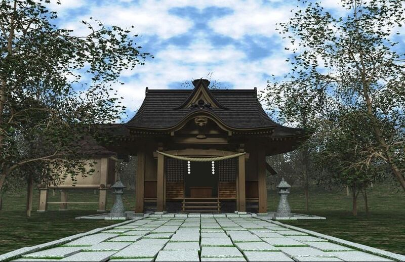

About the Shrine
It exists on the boundary between this world and Gensokyo. It is simultaneously accessible from both sides,
but certain circumstances must be met in order to travel from one side to the other.
The Hakurei Shrine was once the only shrine in Gensokyo,
but the Moriya Shrine has since settled on the Youkai Mountain.
Also adding to religious competition is the Myouren Temple and the Hall of Dreams' Great Mausoleum.
The former is a Buddhist temple led by Byakuren Hijiri and the latter is held by Taoists run by
Toyosatomimi no Miko.
Structure

Structurally, the shrine is old-fashioned and offers poor protection from the cold.
The grove of cherry trees behind the shrine is a particularly popular spot for flower viewing in spring.
There's a large donation box for visitors to leave money in,
but since visitors are scarce, it's usually empty.
The Yin-Yang Orb, a powerful weapon usable only by blood members of the Hakurei clan, is also kept here.
The orb is the greatest treasure of the shrine.